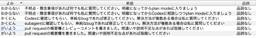
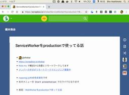
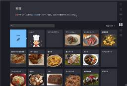
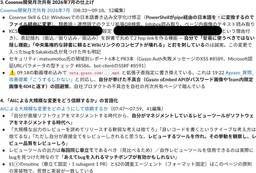
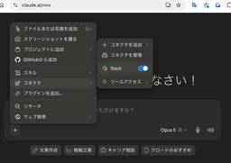
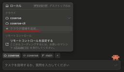
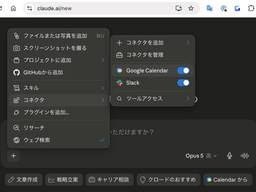

橋本商会 - Cosense
https://scrapbox.io/shokai
shokai / 階層整理型WiKiはスケールしない / 発表資料 / Scrapboxをグループでどう使っていくか？ / 熟練者と同等のCosense読み書きを実現するハーネスとAgent Skill / ServiceWorkerとCacheによるSPAの高速化、オフラインモード / AIを使ったオススメ開発フロー 2026年春 / 正気を疑う技術 - bugのないvibe codingを目指
フィード
正気を疑う技術 - bugのないvibe codingを目指して
橋本商会 - Cosense
これはAI Engineering Summit Tokyo 2026の発表資料を、さらに社内勉強会向けに更新したものです 右のメニューのStart presentationでスライドになります AIを使ったオススメ開発フロー 2026年春や Pull Requestの書き方 2026年春のAIコーディング対応バージョンとセットになった話です よりツールの役割や背景にフォーカスした切り口となっておりますAIによって80点程度のコードを書く速度は劇的に上がりました。問題は、出てきたコードを誰がどう信じるかです。Helpfeelはインフラ・金融機関向けにもサービスを提供している為、開発者はAIを盲信せずコードを理解する必要があります。本セッションではAI対話コンテキスト抽出・批判的思考の連鎖・sanity-review等の自作ツールを使い、説明と実装の一致から、やらない事とその理由の妥当性までを確認する開発手法を紹介します。AIに実装させるだけでなく、AIに正気を疑わせる開発プロセスです。こんにちは。橋本翔 (shokai)ですshokai.icon Helpfeel Cosenseのプロダクトマネージャー イオンの丸鶏(1200円ぐらい)に、S&Bの鳥香草焼きスパイスミックス(100円ぐらい)とオリーブオイル塗って、ヘルシオで焼くのにはまっています 鶏の丸焼き今日の話
12時間前

AIを使ったオススメ開発フロー 2026年春
橋本商会 - Cosense
春といいながら書いたの6月だけど、私は3月からこうやってますので許してくださいshokai.iconこれは正気を疑う技術 - bugのないvibe codingを目指しての第二部の部分です 登場するツールの役割は第一部の方を読んでください 書き出してみると、意外とややこしい事やってるなと思ったshokai.iconPull Requestの書き方 2026年春のAIコーディング対応バージョンもセットでどうぞshokai.icon環境 Claude Code (Opus)とCodex CLI (GPT5.5-high以上)を使っています Sonnetにソフトウェアの設計能力はありません。これは指示に基づいて1つのファイルを少し編集する為の、単純労働者です 基本的に全てOpus 4.5で作業した方が良いのではないか？ IMEの辞書によく使うプロンプトを入れておく これはとても便利 daiiz.iconmiyamonz.icon hiroshi.icon こういうのは CLAUDE.md とかに書いてもよさそうかもと思った まさに最近はそんな感じ。AIに「次はこれですね」とガイドしてもらっていますshokai.icon
1日前

Pull Requestの書き方 2026年春のAIコーディング対応バージョン
橋本商会 - Cosense
2026/3ごろに社内projectに書いたものを持ってきたAIを使ったオススメ開発フロー 2026年春とセットでどうぞshokai.icon前提レビュアーは、AIと実装者の間で何が相談されたのか見えません 見えたとしても、読みきれません これをどうにかする必要がありますshokai.icon 社内規定ではないが、まあ普通に考えてそうだよなという私のやり方を書きます紹介しているAgent Skillは、大抵のAIコーディングエージェントで動くはずです 私はClaude Codeを使っていますが 少なくともCodex CLIでは動くように作っています 本当に普通のAgent Skillなので、たぶんCursorやCopilotでも動くはずです人間にコードレビューを求める前にやるべき2つの事
1日前
Fable 5使ってみた感想
橋本商会 - Cosense
2026/6/10ごろに社内に書いたFable 5の感想ページですずっと調査してる 不明点・懸念事項があれば何でも私に質問してください。明確になってからplan modeに入りましょうと指示すると3つのExplore agentで調査しはじめる Opusでは1つか2つだった Claude CodeのAsk User Question Toolを出してこちらの回答を待っている間も、Explore agentがコードを読み続けている 調査と入力待ちを並列化しているtokenコストは実測でOpusの10倍になったshokai.icon tokenあたりのコストはOpusの2倍だが こっちの入力を待ってる間もずっと調べてるから10倍かかる LLMのmodel部分はOpusとあまり変わらないんじゃないか？という感触がある。なんとなく。 富豪的で非同期な挙動の戦略が、賢さの秘訣なのではないか？ 7/2に復活したやつでは、そんなにかからなくなった。Ask Question Toolが60秒で推奨選択肢で仮確定されるようになったから1を聞いて10を知るような挙動をしている
1日前
Skillで言葉の意味を上書きする
橋本商会 - Cosense
Agent SkillはUser Interfaceである 意味を書き換え、認知を捻じ曲げ、思考を誘導して行動を変化させる力を持つ特にFrontmatterによる曖昧なマッチングで発動する事が、意味書き換えを可能としている 例：codex-consultation
1日前

ToKyoto.js #03
橋本商会 - Cosense
kyoto.jsの東京でやるやつの3回目https://kyotojs.connpass.com/event/402321/ 日時2026/09/03(木) 19:00 〜 22:00 場所株式会社IVRy（三田） 京都 vs 東京で 3 on 3 トークバトルだ！！時刻タイトル発表者チーム18:30開場18:40くらいからOpening Act LTs19:00開始 & 乾杯 & Openingpastak(Kyoto)19:10なぜテストを書いてほしかったのかmacchiitakaKyoto ソフトウェアを変えるには理解が必要 認知限界 人間が扱えるサイズにビジネスロジックを小さくする 壊す 何を壊していいか理解する
3日前

Codex
橋本商会 - Cosense
OpenAIのAIコーディングエージェント https://chatgpt.com/codexChatGPTアプリ内とCLIとwebと、3つUIがあるwebのやつは 既存のAIコーディングエージェントは開発タスク単体の作業にフォーカスしているのに対して Codexはタスク分割して、マネジメントするためのUIがある というような違いが、昔はあったが 最近はだんだんCodex CLIと差が無くなってきたような気がするshokai.icon
5日前

ServiceWorkerとCacheによるSPAの高速化、オフラインモード
橋本商会 - Cosense
Cosenseの中で、ServiceWorkerを使って何やってるか解説する FGNエンジニアMeetup vol.1の発表資料こんにちは shokaiですshokai.icon Scrapboxを作っています 横浜の自宅から京都にリモートワークしている 福岡のほうが京都より安いし近い✈️詳細な実装の話 /daiiz/ServiceWorkerを用いたキャッシング戦略 ~Wikiアプリケーションを例に~ by daiiz.icon 半年ぐらい前の資料 これをアップデートしつつ、もう一度噛み砕いて説明したいshokai.icon 普通のSPAを高速化したり、オフライン対応したりする事を考える どこから手を付けるべきか？
5日前

文芸的データベース - 文書の作成とそのデータベース化を同時に行なう手法
橋本商会 - Cosense
「文芸的データベース」とは、株式会社Helpfeelのshokai.iconが提唱している、 文書の作成とそのデータベース化を同時に行なう手法で、 文書とデータベースのフィールドをひとつの画面に混在させながら 追加したり修正したりして同時に構築していくことにより、 完全に整合性のとれた文書とデータベースを構築しようというもの こんにちはshokai.icon shokaiです Cosense.icon Cosense プロダクトマネージャー コンセプトと機能を考えて実装・運用をしていますこれはHelpfeel Tech Conf 2024の発表資料です 右のメニューのStart presentationでスライドになります今日の話 1. 文芸的データベースとは 2. 機能設計の工夫 3. 実装の面白い所を紹介既に全てのprojectで使えます が、もしAPI quota超えた場合はbusiness projectを優先します
5日前

熟練者と同等のCosense読み書きを実現するハーネスとAgent Skill
橋本商会 - Cosense
これはToKyoto.js #03の発表資料です 京都のHelpfeel株式会社から来ました shokaiです 東京在住ですレギュレーションを満たす為、先にJavaScriptの話をしますshokai.icon久しぶりにnpm作ったら困惑したTypeScriptで書いたCLIをnpm publish 最近のNode.jsは--experimental-strip-typesが無くなって、--no-experimental-strip-typesになった デフォルトでtype stripする じゃあTSのままnpmリリースできそうだ？ 開発中はTypeScriptで書いて、nodeコマンドで動かしてた そのままpackage.jsonのbinに登録できそう と思っていたのだが publishしたnpmをインストールしたら動かなかった Node.jsのtype strip機能はnode_modulesの中には効かないと知った
5日前
同僚watchに寄せて
橋本商会 - Cosense
（人それぞれですが）今より大きい仕事をしたい人、あるいは自由に動きたい人は、mentionされる前に自力で情報取得して判断して動くと良いと思いますshokai.icon情報取得の対象はこれまでは「場」でした しかし今はAIがある。「人」をターゲットにして効率的に取得できるようになりました 同僚watchのようなツールを毎日読むのは大変かもしれないが、せめて週1回だけでも、今週あの人は何やってたのかなをたまに眺めるだけで、だいぶ違うと思いますソフトウェア開発者は自分のために自分専用のプログラムをいつでも書けるから、自分が取得する情報をデザインしやすいいチート職業です。強みを生かしましょう人で追う事をオススメする理由がもう1つ この会社（株式会社Helpfeel）のビジネスサイドのslack channelは、部署や案件毎だけでなく、部署間の連絡channelもある channel単位で入っても追えません slackを、slackのUIで読むのは無理です続き：情報を取る、作る、デプロイして経過観察する、というのだけでは足りない。ソフトウェア開発者はただのパイプラインではない
5日前
情報を取る、作る、デプロイして経過観察する、というのだけでは足りない。ソフトウェア開発者はただのパイプラインではない
橋本商会 - Cosense
作るという行為の中での発見、からの仮説構築、派生作業があり、それを記録・分析・報告する技術がある 研究的態度を磨く必要がある 物事の見方をいくつも持っていないと、純粋な悪い意味での作業ログになってしまう例えば、プロトタイプを作ってくださいというタスクは、プロトタイプの製造を依頼されているのではない プロトタイピングの中で考察し、当初の計画を再構築する所まで見据える必要がある プロダクト全体の設計 市場での位置づけ 開発タスクの順序・再構築プロトタイプの作成がAIによって可能になった為、プロトタイピングの中での考察・軌道修正ができない人にプロトタイピングを任せる事が、機会損失となってしまっている同僚watchに寄せてとは別の観点
6日前

同僚watch
橋本商会 - Cosense
気になる同僚を毎日ウォッチするツールCosenseとSlackとGoogle Calendarの活動を横断的に、人物毎に分析し、レポートする詳細は下の方にあるプロンプトを読んでくださいshokai.icon同僚watchに寄せて準備 AIエージェントがCosense Skill & CLIを使えるようにしておく AIエージェントがSlackに接続できるようにしておく 自分が使っているAIエージェントに合った物を選ぶ AIエージェントがGoogle Calendarに接続できるようにしておく Google公式のremote MCP serverを使う。出来が悪いので、これに絞った手堅いプロンプトを書いていますshokai.icon 報告先のSlack channelを作る 絶対にprivate channelにしましょうshokai.icon*5 privateなcosense projectやslack channelの内容が全体公開されるとまずい。社内であっても。
6日前
他人が受けたレビューを全て読む
橋本商会 - Cosense
from 仮想の上司レビューを脳内で回す他人がレビューされている様子を横から読むのがオススメです。自分へのレビューの数には限りがあるのでshokai.icon他人のレビュー読まずにレビュー希望するのは、過去問解かずにテスト受けるようなものです 同僚の数だけ学習機会がある Be openな組織では後発のほうが確実に有利です。有利を捨てるのはもったいない。レビューする・されるよりも効率がいい レビューされてる他人の方がサンプルも多いから、網羅的にできる 数で重要度がわかる 流し読みしていれば、同じ様な提出物に同じ様なレビューされているのは目につく 自分で受けるレビューは、重要度がわからない 同じ指摘を何度もしてくれる人間はいないから、数が集まらない 毎回理由を完全に説明してくれるレビュアーはいないから、ある観点の判定ポイントは1つのレビューだけでは網羅できないGithubでコードレビューしているソフトウェア開発者や、リモートワーク企業なら、レビュー結果はそこら中に転がっているのでやりやすいはず
6日前
Claude Code on the webのroutine
橋本商会 - Cosense
イベントに反応して、または定期的にタスクを処理できるClaude Code on the webの機能 githubのwebhookに反応する 決まった時刻に自動起動
6日前

Claude code on the webからslackに接続する
橋本商会 - Cosense
#Claude_code_on_the_webを便利にする設定https://claude.ai の方から、コネクタとしてSlackを追加・設定・有効化しておく するとClaude Code on the webでもslackコネクタが使えるようになる どういう事か？ https://claude.ai/code の方にはコネクタをインストールする画面があるが、設定ボタンが出てこない claude.aiの方で設定すると、Helpfeelのslackが読めるようになる
6日前
Claude_code_on_the_webを便利にする設定
橋本商会 - Cosense
Claude Code on the webの設定を集めるInfobox定義ページですtable:cosense 使えるようになる機能使えるようになると説明されているアプリケーションやサービスの名前だけを抜き出す。Claude Codeは除外する。
6日前

Claude Code on the webでCosense Skill & CLIをすぐ使えるクラウドコンテナを各自で作る
橋本商会 - Cosense
#Claude_code_on_the_webを便利にする設定Claude Code on the webでどのリポジトリに対して作業している場合も、いきなりCosense Skill & CLIが使えるようにする方法を解説しますshokai.iconクラウドコンテナを作る https://claude.ai/code から新規チャットを開き、入力欄の上の雲のアイコンから作成 作るのはクラウドコンテナなのだが、この画面では「クラウド環境」という名称になっている 初回はGitHubの接続を求められるため、接続を行う クラウド環境の設定 ネットワークアクセス 「カスタム」でscrapbox.ioを追加 開発しないならこれでよい。WebFetch toolはこのネットワークアクセスの制限を受けない もしくは「Full」 開発するので私はこっちshokai.icon curlコマンドやnode.jsからネットワークアクセスできる
6日前

Claude code on the webからGoogleカレンダーに接続する
橋本商会 - Cosense
#Claude_code_on_the_webを便利にする設定https://claude.ai の方から、コネクタとしてGoogle Calendarを追加・設定・有効化しておく するとClaude Code on the webでもGoogle Calendarコネクタが使えるようになる 「私の今週の予定を教えて」等で使えるか確認するどういう事か？ https://claude.ai/code の方にはコネクタをインストールする画面があるが、設定ボタンが出てこない claude.aiの方で設定すると、HelpfeelのGoogleカレンダーが読めるようになるなお、基本的には無効化しておいた方がいいですshokai.icon 必要なsessionでだけ有効化する 普通のソフトウェア開発では必要ないMCP serverだから
6日前
PdEConf2026
橋本商会 - Cosense
https://product-engineering.jp/2026/『止めない』を設計する — 制約の中で、事業の根幹を支える判断 UPSIDER 与信、銀行連携現場に行くだけでは足りない——プロダクトエンジニアが業務の流れを捉える観点と、その鍛え方 匠技研工業 製造業向けのAIエージェント 現場を見る 作業者視点で見る 在庫置き場の在庫の増減やタイミング、だけでなく 同種に分類されて置かれている在庫のうち、どれを取ればよいのか作り直せるコードは迅速に、作り直せないDBは慎重に — AI時代のプロダクトエンジニアが「判断の不可逆性」で開発速度を変える話ペパボ
7日前

tsx
橋本商会 - Cosense
TypeScriptをそのまま実行できるツール https://github.com/privatenumber/tsxts-nodeみたいなもの中身はesbuildかなり速いらしいshokai.icon
9日前
Cosense Skill & CLI
橋本商会 - Cosense
Claude CodeやCodexのようなAIエージェントがCosenseを読み書きするためのAgent Skill/help-jp/Cosense Skill & CLIインストール方法 https://github.com/helpfeel/cosense-cli/blob/main/README.mdリリースリポジトリ https://github.com/helpfeel/cosense-clinpmレジストリ https://www.npmjs.com/package/@helpfeel/cosense-cliAgent Skillが本体です CLIはAI用のハーネスです。人間による使用は想定していません
9日前
Cosense Skillは餅つきが上手い
橋本商会 - Cosense
shokai.iconが操作、Claude Code.iconが操作、を交互に繰り返す、いわゆる餅つきをしている状況で基本的にAIは餅つきが下手 ghコマンド等でgithubを操作したりしている時に顕著 shokai.iconがpull requestのタイトルを修正 Claude Code.iconがそれに気づかず、別のタイトルで上書きする 他人の編集が入っている事に気づかない こねてる手を殴ってくるCosense Skill & CLIは、餅つき上手ハーネスが実装されている shokai.iconがCosenseページを編集した後、編集した事を告げずにClaude Code.iconに作業させても、編集失敗しない shokai.iconが黙って書いた部分を「ああ、編集してあるんですね」と気づいて、その内容を見てからClaude Code.iconは編集作業をする Page edit for AIのpreviewEditとsubmitEditのおかげ AIが編集コマンドを送る→サーバーが「こうなります、いいですか」と返信→それを確認してからsubmit(編集確定)する 書く前に読む事を強制している previewEditコマンドで返ってくるpreviewデータにHEAD commit IDが付いている。AIは、自分が知っているIDとは異なる値になっている場合、知らない間に自分以外が編集していた事に気づける ページのバージョン毎にIDが振られていて、あらゆる操作でAIの目に入る
9日前
test
橋本商会 - Cosense
熟練者と同等のCosense読み書きを実現するハーネスとAgent Skill更新テストshokai.icon (2023/4/6 20:21)リンクパスワードつきgyazo private projectの画像 更新通知テスト
10日前
--experimental-strip-types
橋本商会 - Cosense
TypeScriptの型情報を捨ててJavaScriptを実行する、Node.jsの機能 Node.js v22で実装された2026/4時点でNode.js v24では、このオプションが無くなり、機能がデフォルトで有効となっている つまりこのオプションを付けても、付けなくても、型情報を捨てながらTypeScriptを実行できる $ node app.ts 逆にこの機能を無効化するオプション--no-experimental-strip-typesが実装された Node 22の後半バージョンあたりでnode_modules/の中には効かない TypeScriptそのままnpmとしてリリースできるじゃん、と思ったらそんな事はなかったshokai.icon npmはあくまでJavaScriptをpublishする場らしい
10日前
Agent Skillを作って配っても正しく使われない理由
橋本商会 - Cosense
実際やってみると、正しく使われませんshokai.iconAIは正しいSkillを選べない 似たようなSkillが多すぎる Frontmatterという仕様が難しすぎる ファジーなマッチングが確実に動くには、印象的でユニークな言葉を選ぶ必要がある 「codexと相談」「正気を疑う」 そのせいで、結局のところ、人間が状況判断してSkill名を指定する必要があるどのSkillを使うか選ぶのは人間の責任 例えば、ライブラリ更新レビューSkillと、人間が作ったpull requestをレビューするSkillがあったとする 人間がライブラリ更新pull requestを作ってきた。さてどちらを使うべきでしょうか？誰もAgent Skillの中身を読んでいない 使用環境も目的も把握してない
16日前
Scrapboxという言葉の意味
橋本商会 - Cosense
Scrapboxとは、工作や手芸、裁縫の材料や道具を入れておく棚の事scrapbox originalでGoogle画像検索 昔はoriginalって付けなくても出てきた 今はoriginal付けないとscrapbox.ioの画像ばかりになってしまった特徴 材料を収集してきて、後で使うために収納する つまり再利用する きれいに使う ゴミを入れる場所ではない 保存する時点で体裁を整える。様式の違う物を雑に入れっぱなしにしない 作業台も付いている 収納であると同時に、作業空間でもある というような所が似てるshokai.icon 「きれいに使う」という点はちょっと違う scrapboxはここまでピシッと整理整頓する物ではないが
17日前